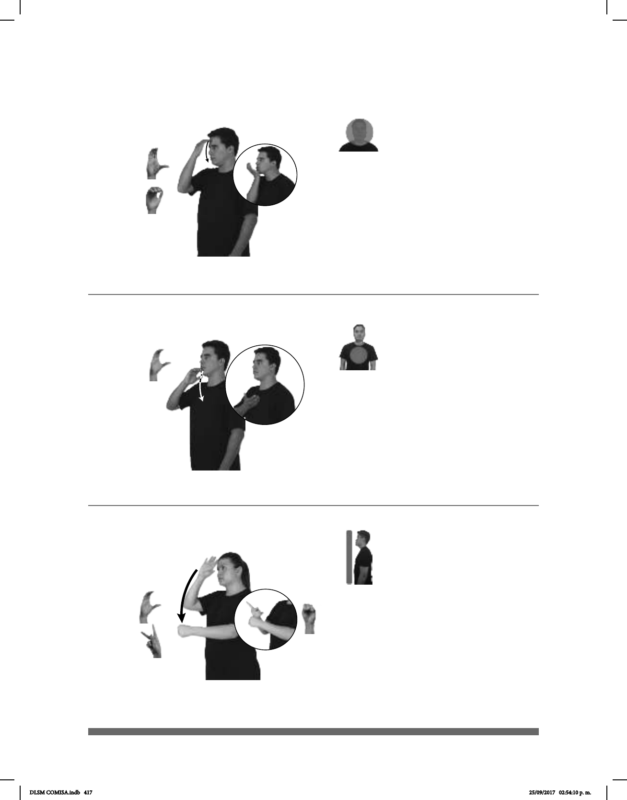

417
Seña: SM
Seña que pasa de C.3
La palma inicia hacia
adentro y termina oblicua hacia arriba y
hacia adentro.
De la frente a la barbilla.
La mano se mueve
formando un arco.
sust. f. Medio de transporte
público utilizado en México. Su
nombre proviene de un modelo de
automóviles de la marca Volkswagen.
Seña: SM
C.1
La palma inicia
oblicua hacia la izquierda y hacia
abajo y termina hacia arriba.
De la barbilla al pecho.
La mano se mueve
formando un arco.
Cadena de
supermercados con presencia en
todo el país cuyo logo simula un
pelícano.
(C-64)
MAÑANA COMBI pro-YO IR A
distancia lugar
pos-MI CASA
Mañana me iré en combi a mi casa.
(C-65)
®
COMERCIAL MEXICANA
derecha
pro-YO COMPRAR CENA NAVIDAD
Compraré la cena de Navidad en la Comercial Mexicana.
Seña: SB
MD seña que pasa de C.1 a
MD la palma inicia hacia
fuera y termina hacia arriba. MB palma
hacia
adentro.
La MD inicia sobre la frente y
termina sobre MB. MB a la altura del pecho.
La mano se mueve formando
un arco.
sust. m. Padrino de un niño con
respecto a los padrees de éste, y el padre del
niño con respecto a los padrinos. 2. Hombre
que se relaciona con otro por una estrecha
amistad.
(C-66)
dm-RAÚL
allá
COMPADRE pos-MI pro-ÉL PAPÁ
Raúl es el compadre de mi papá.
DLSM COMISA.indb 417 25/09/2017 02:54:10 p. m.